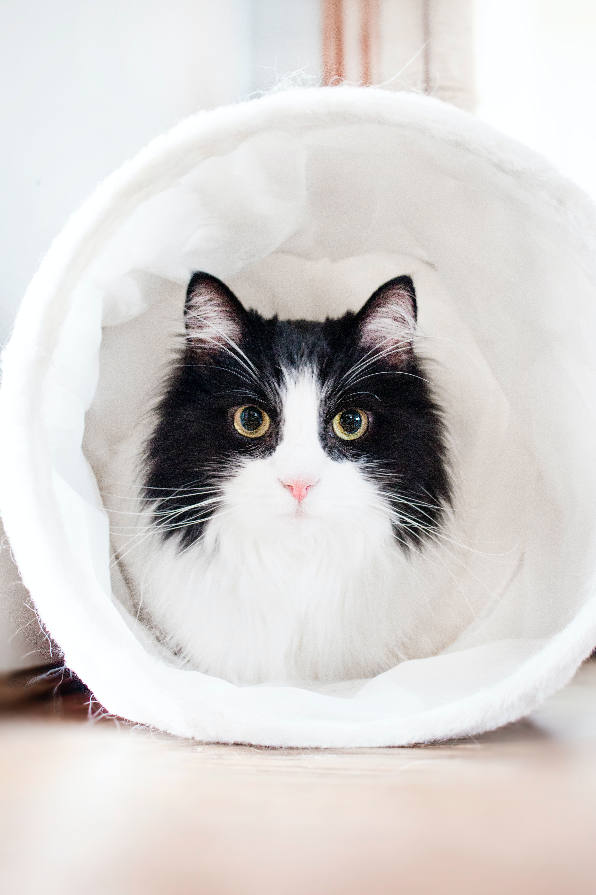

ADOPTE TON CHAT
Localisation
Choisissez une région
Auvergne-Rhône-Alpes
Bourgogne-Franche-Comté
Bretagne
Centre-Val de Loire
Corse
Grand Est
Hauts-de-France
Île-de-France
Normandie
Nouvelle-Aquitaine
Occitanie
Pays de la Loire
Provence-Alpes-Côte d'Azur
Autre
Race
Choisissez une race
Bengale
Balinais
Chartreux
Chat européen
Himalayen
Maine Coon
Persan
Sacré de Birmanie
Siamois
Sibérien
Sphynx
Autre
Sexe
Choisissez un sexe
Mâle
Femelle
Age
Choisissez une tranche d'âge
0-1 an
2-3 ans
4-6 ans
7-9 ans
10-12 ans
12-14 ans
+14 ans
RECHERCHER
